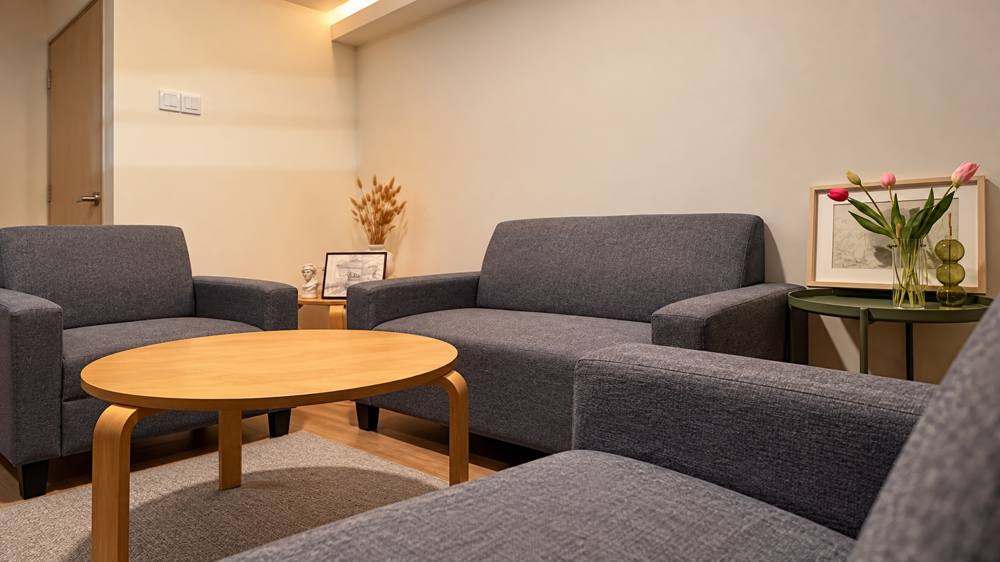
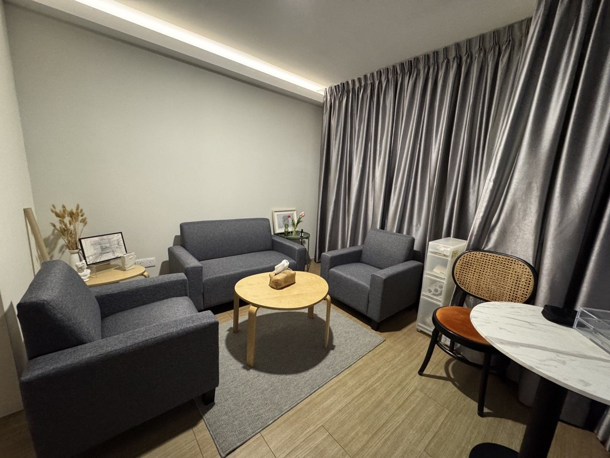
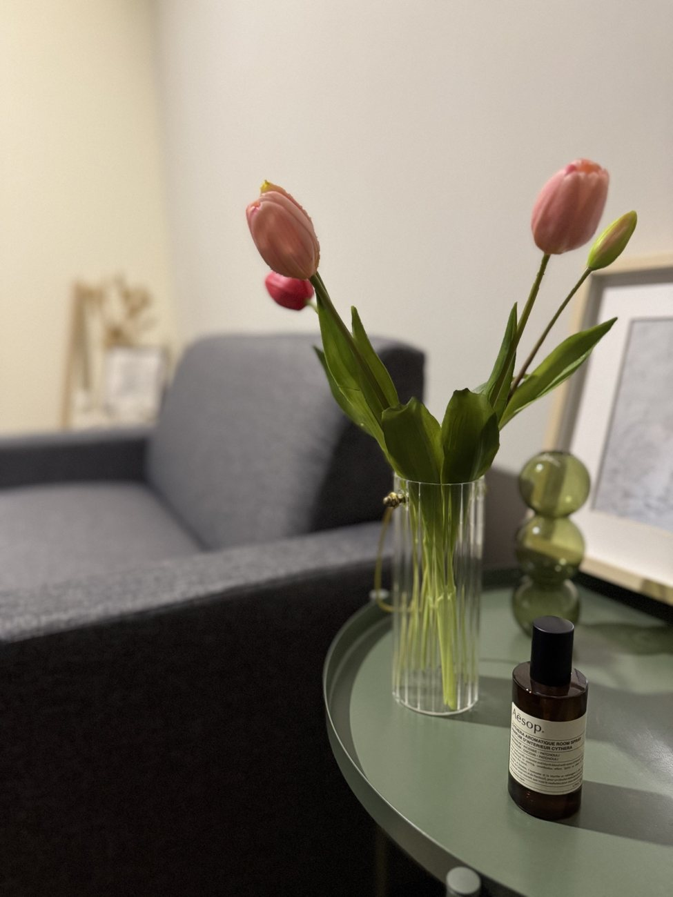
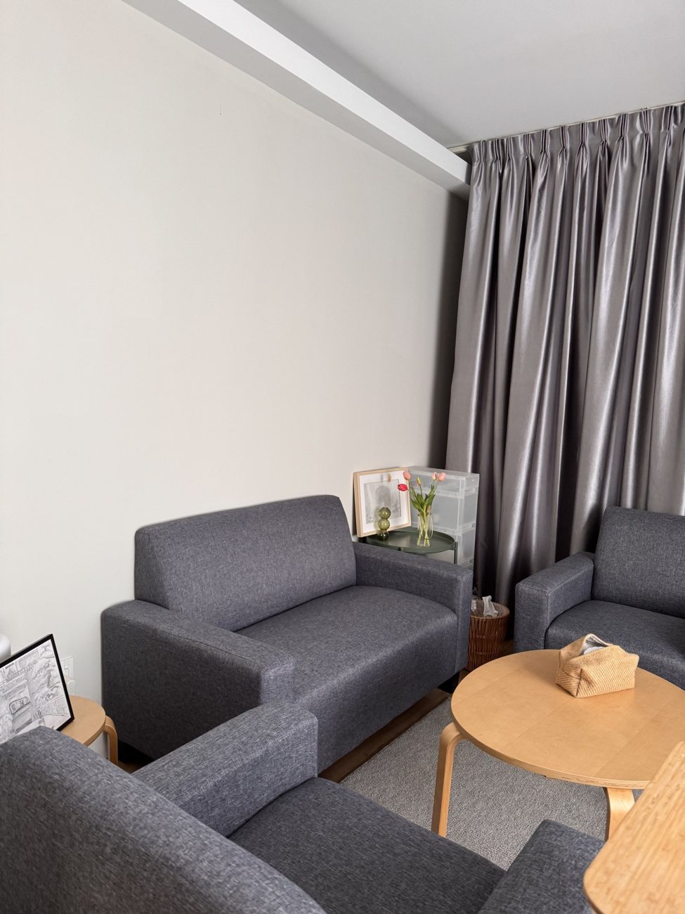

中文服务
可以用您最自在的语言，谈重要的事。
有些情绪、家庭经历、人际关系里的伤，或说不清的内在挣扎，用熟悉的语言表达会更贴近自己。咨询可以中文或英文进行；马来文支持会根据沟通需要与临床适合度安排。
伴旅心理健康服务 · 安邦，马来西亚
陪您理解情绪，也更理解自己。
安邦面对面心理治疗，以及马来西亚线上心理支持。

情绪困扰值得被认真对待。我们会在尊重与合作的治疗关系中，了解您的经历、当前处境与反复出现的模式，并探索适合您的支持。
中文服务
有些情绪、家庭经历、人际关系里的伤，或说不清的内在挣扎，用熟悉的语言表达会更贴近自己。咨询可以中文或英文进行；马来文支持会根据沟通需要与临床适合度安排。
治疗关系
在治疗中，您不需要急着“变好”。我们会先一起理解您目前的状态、情绪背后的意义，以及那些让您感到卡住的内在模式。
以下为中心实景照片，让您在预约前可以先大致了解环境。



情绪取向治疗（EFT）重视情绪、想法、身体感受与个人意义。情绪可以帮助我们了解需要与处境；有些反应也与过去的经历有关，在当前生活中未必仍然有帮助。
Emotion Focused Therapy
咨询可能包括留意身体感受、表达与探索情绪，或在适合时以体验性练习处理内在冲突。我们会一起讨论方式与节奏。
治疗也会关注情绪调节，以及发展新的情绪体验，例如自我关怀，来帮助转化反复出现的痛苦反应。过程与结果因人而异。
服务以预约制进行，适合希望更理解自己、处理情绪困扰、改善人际关系模式，或寻求专业心理支持的人士。
支持情绪困扰、压力、自我理解、人生转变、哀伤、孤独与个人成长。
协助处理焦虑、低落、无力感、过度担忧、情绪麻木或长期压力。
探索人际关系中的重复模式、沟通困难、依附需要、情绪疏离与未被满足的需要。
探索自我批评、完美主义、罪恶感与羞耻，以及它们对您的影响。
在合适的临床情况下，提供心理咨询、初步理解与下一步建议。
为个人、家庭、学校、职场或社区提供心理健康教育与主题分享。
创办人
Kai Shen 是注册临床心理师，也是 Side by Psych Wellness Centre 的创办人。他的临床工作重视专业伦理、循证实践与有温度的陪伴，并以情绪取向治疗（Emotion Focused Therapy，EFT）作为主要治疗取向之一。
他已完成情绪取向治疗（EFT）Level 3 训练，也是马来西亚临床心理学会（MSCP）正式会员。
所有心理治疗与心理服务均需提前预约。您可以先发送一则简短信息，告诉我们您希望获得哪方面的支持。
通过 WhatsApp、电邮或下方表格留下姓名、联系方式、偏好的咨询方式，以及您希望获得的支持。
中心会回复有关服务适合度、预约时间、咨询方式与费用等实际资料。
咨询可在 Ampang 中心面对面进行，或在临床上合适时安排线上咨询。
费用
每次至少 60 分钟。面对面四次套票从 RM500 起；线上四次套票从 RM360 起。配套适合度可先讨论。心理评估、报告及其他专业服务另行报价。
如需取消或改期，请至少提前 12 小时通知；改期需视可预约时段而定。
紧急情况
如果您或他人正处于即时危险，请联系当地紧急服务、前往最近的医院急诊部，或联系危机热线。
以下资料可帮助您在开始心理治疗前，先了解基本安排。
不一定。很多人开始心理治疗，是因为感到情绪卡住、压力太大、焦虑、低落、自我批评、人际关系困难，或只是想更理解自己。
EFT 不只是谈论情绪，也包括情绪体验、表达、觉察与调节，以及在适合时开展情绪转化工作。具体方式会根据您的需要与当下体验调整。
可以视情况安排。是否适合线上进行，会根据您的需要、临床情况与治疗目标一起讨论。
咨询会按照专业伦理与法律范围处理保密。若涉及即时危险、保护安全或法律要求，保密会有相应限制。
面对面个人心理治疗每次 RM150，每次至少 60 分钟，四次套票从 RM500 起。线上个人心理治疗每次 RM100，每次至少 60 分钟，四次线上套票从 RM360 起。心理评估、报告与其他专业服务将另行报价。
本中心不提供紧急危机服务。若您或他人正处于即时危险，请联系当地紧急服务、前往最近的医院急诊部，或联系合适的危机援助热线。
当您准备好时
您不需要先想好每一句话。
欢迎询问可预约时段、咨询方式或下一步。
A-6-1, Merdeka Place Jalan MPL,
Jalan Merdeka, 68000 Ampang, Selangor
服务需提前预约。欢迎询问当前可预约时段。
若您或他人正处于即时危险，请联系当地紧急服务、前往最近的医院急诊部，或联系危机热线。